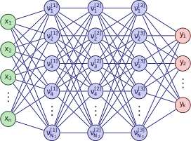

Neural networks are trained via an algorithm called backpropagation
6.6 Backing Up: What is a Neural Network?
A linked network of \(L\)layers each containing nodes\(\nu_i^{[\ell]}\)
Code
\colorlet{myred}{red!80!black}\colorlet{myblue}{blue!80!black}\colorlet{mygreen}{green!60!black}\colorlet{myorange}{orange!70!red!60!black}\colorlet{mydarkred}{red!30!black}\colorlet{mydarkblue}{blue!40!black}\colorlet{mydarkgreen}{green!30!black}\tikzstyle{node}=[thick,circle,draw=myblue,minimum size=22,inner sep=0.5,outer sep=0.6]\tikzstyle{node in}=[node,green!20!black,draw=mygreen!30!black,fill=mygreen!25]\tikzstyle{node hidden}=[node,blue!20!black,draw=myblue!30!black,fill=myblue!20]\tikzstyle{node convol}=[node,orange!20!black,draw=myorange!30!black,fill=myorange!20]\tikzstyle{node out}=[node,red!20!black,draw=myred!30!black,fill=myred!20]\tikzstyle{connect}=[thick,mydarkblue] %,line cap=round\tikzstyle{connect arrow}=[-{Latex[length=4,width=3.5]},thick,mydarkblue,shorten <=0.5,shorten >=1]\tikzset{ % node styles, numbered for easy mapping with \nstyle node 1/.style={node in}, node 2/.style={node hidden}, node 3/.style={node out},}\def\nstyle{int(\lay<\Nnodlen?min(2,\lay):3)} % map layer number onto 1, 2, or 3\begin{tikzpicture}[x=2.2cm,y=1.4cm]\readlist\Nnod{4,5,5,5,3} % array of number of nodes per layer\readlist\Nstr{n,N_1,N_2,N_3,k} % array of string number of nodes per layer\readlist\Cstr{\strut x,\nu^{[\prev]},\nu^{[\prev]},\nu^{[\prev]},y} % array of coefficient symbol per layer\def\yshift{0.5} % shift last node for dots\foreachitem\N\in\Nnod{ % loop over layers\def\lay{\Ncnt} % alias of index of current layer\pgfmathsetmacro\prev{int(\Ncnt-1)} % number of previous layer\foreach\i [evaluate={\c=int(\i==\N); \y=\N/2-\i-\c*\yshift;\index=(\i<\N?int(\i):"\Nstr[\lay]");\x=\lay; \n=\nstyle;}] in {1,...,\N}{ % loop over nodes% NODES\node[node \n] (N\lay-\i) at (\x,\y) {$\Cstr[\lay]_{\index}$};% CONNECTIONS\ifnum\lay>1 % connect to previous layer\foreach\j in {1,...,\Nnod[\prev]}{ % loop over nodes in previous layer\draw[connect,white,line width=1.2] (N\prev-\j) -- (N\lay-\i);\draw[connect] (N\prev-\j) -- (N\lay-\i);%\draw[connect] (N\prev-\j.0) -- (N\lay-\i.180); % connect to left }\fi% else: nothing to connect first layer }\path (N\lay-\N) --++ (0,1+\yshift) node[midway,scale=1.5] {$\vdots$};}\end{tikzpicture}

6.7 What Do the Nodes Do?
Each node \(\nu_i^{[\ell]}\) in the network:
Takes in an input,
Transforms it using a weight\(w^{[\ell]}_i\) and bias\(b^{[\ell]}_i\), and
Produces an output, typically using a sigmoid function like \(\sigma(x) = \frac{1}{1+e^{-x}}\):